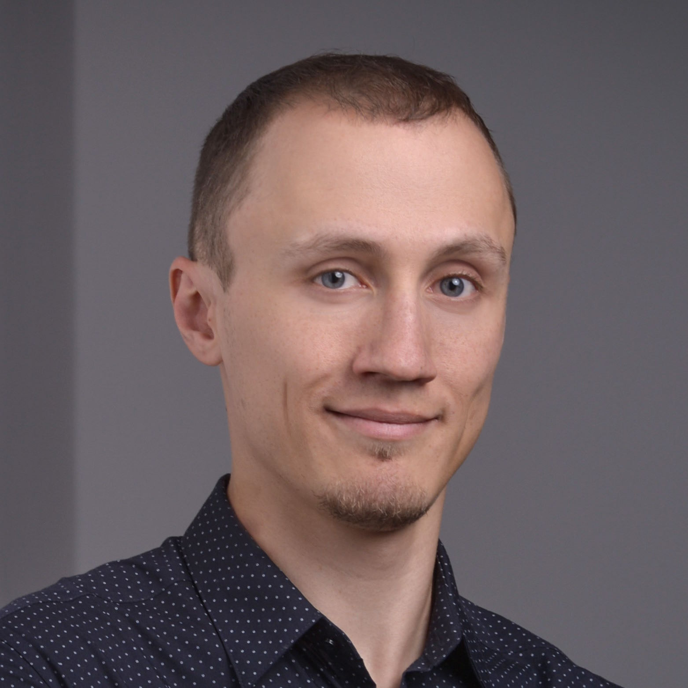

Roman Kuznetcov

Summary
I am a responsible and serious person who has an experience in medicine and IT
Education
- Siberian College of Interpreters and Managers (2006-2008)
- Irkutsk State Linguistic University of Russia (2008-2012)
- Heimerer Academy of Germany (2015-2018)
Work Experience
-
Janitors Service Department - Augustinum Munich Neufriedenheim.
September 2013 - March - 2015
- Technical service of the house
- Repairing and fixing any kind of furniture
- Logistics in the house different sorts of items and objects
-
Care Departement - Augustinum Munich Neufriedenheim.
September 2015 - July 2019
- Care and control of elderly
- Patient education and support
- Planning of care
-
Nursing Departement - LMU Clinic Campus Großhadern
August 2019 - March 2021
- Manage Patient Cases
- Communication with physicians
- Administer Medication
-
Physiotherapist Departement - LMU Clinic Campus Großhadern
April 2021 - March 2023
- Supervise medicial support personnel
- Recording patients progress and modifying the plan of care if needed
- Conduct of a patient case
Skills
- Microsoft Windows: ⭐️⭐️⭐️⭐️⭐️
- Visual Studio Code: ⭐️⭐️⭐️⭐️
- Microsoft Office Suite: ⭐️⭐️⭐️⭐️
- Linux: ⭐️⭐️⭐️
Awards and Certifications
- Goethe-Certificate B2 - Munich Adult Education Center (January 2019)
Other